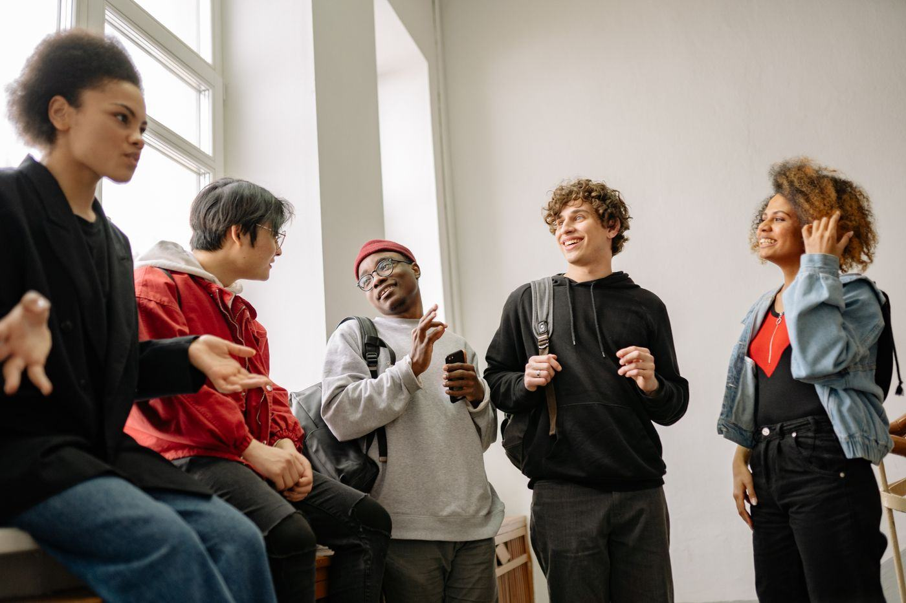

Home › Opleidingen › Sociaal werk & hulpverlening

Opleidingen in Sociaal werk & hulpverlening
Mensen met problemen helpen met opvoeding, wonen, schulden of werk. Hier staan alle 35 opleidingen in deze groep, op mbo, hbo en universiteit.
Wat kun je ermee?
- Maatschappelijk werker
- Jeugdzorgwerker
- Wijkcoach of jongerenwerker
- Begeleider in de gehandicaptenzorg
Op mbo (20)
- Agogisch medewerker GGZ
- Begeleider gehandicaptenzorg
- Begeleider maatschappelijke zorg
- Begeleider specifieke doelgroepen
- Gespecialiseerd pedagogisch medewerker
- Gespecialiseerd pedagogisch professional
- Handhaver toezicht en veiligheid Milieu, welzijn en infrastructuur (domein II)
- Helpende Zorg en Welzijn
- Pedagogisch medewerker kinderopvang
- Persoonlijk begeleider gehandicaptenzorg
- Persoonlijk begeleider maatschappelijke zorg
- Persoonlijk begeleider specifieke doelgroepen
- Persoonlijk begeleider zorgboerderij
- Persoonlijk werkbegeleider zorgboerderij
- Sociaal werker
- Sociaal-cultureel werker
- Sociaal-maatschappelijk dienstverlener
- Thuisbegeleider
- Werkbegeleider zorgbedrijf-dierhouderij
- Werkbegeleider zorgboerderij
Op hbo (7)
- Counselling
- Maatschappelijk Werk en Dienstverlening
- Pedagogisch Management Kind en Educatie
- Sociaal Pedagogische Hulpverlening
- Sociaal-Juridische Dienstverlening
- Social Work
- SZ-Professional
Weet je nog niet welke kant je op wilt? De Padvinder laat in 5 minuten zien welke richtingen bij je passen.
Start de Padvinder